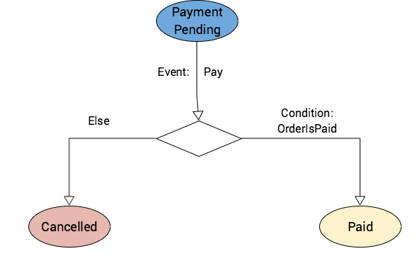
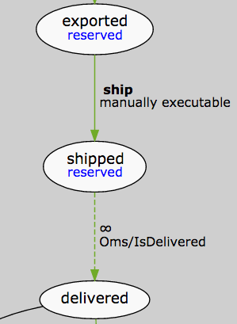
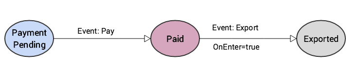
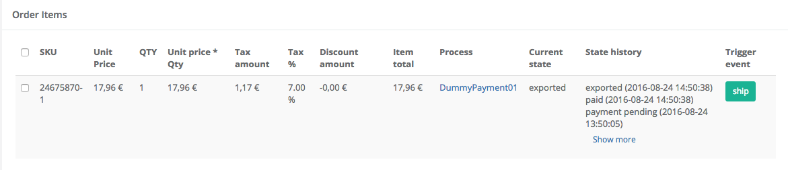

State Machine Cookbook - Part I - State Machine Fundamentals
State machines are a model of computation used to automate processes. In Spryker you can use the OMS module to automate the management of orders or the StateMachine module to automate other processes you define in your shop. Both behave similar, but the OMS one is a customized solution to manage the orders in a shop.
The machine can be in one of a finite number of states and it can be only in one state at a time. ( e.g. : state machine is in waiting for payment state ).
State machines can model problems that involve performing of a predetermined sequence of actions that depend on a sequence of events (e.g. : order is being shipped if the payment is successful).
State-Machine Components
E-Commerce companies need to implement highly individual processes that need to be continuously improved. Instead of building code for every process or adapting standard functionality of a shop system, Spryker takes a totally different approach. The order process is modelled with states and transitions and it’s then transferred to an XML notation. The XML format is understood and executed by Sprykers Zed engine. Zed executes the process model, no need to program a specification anymore.
You can define a state machine for each process you identify in your application. For example, the process of managing orders that use credit card as a payment type is different than the orders that use invoice. You can define for each a separate state machine and when a new order is submitted you can choose which of the available state machines you want to manage it with.
States
What are the relevant elements of a state machine? States allow to describe in which state a sales order, specifically the sales order item, is in. States can reflect everything that needs to be considered in your order processing. If you have a build to order process, one state could be “waiting for production finished”. If you sell digital goods one state could be download for customer activated. In case of physical goods a state called shippedreflects that the sales order or some items have been shipped.
How are the states modeled in XML? A list of state elements can be defined with this simple XML. First the state has a name, that allows to reference the state. The display attribute allows to define a glossary key that contains the translation for the state name.
<states>
<state name="new" reserved="true"/>
<state name="paid" display="customer.order.state.received">
<flag>invoicable</flag>
</state>
<state name="shipped" display="custom.order.state.shipped" />
</states>
Furthermore a state can contain several flags.
Flagged Items
Sometimes you need to have the ability to check if items are in a certain state. For determining if an order is flagged, OmsFacade exposes two operations:
- isOrderFlagged($idOrder, $flag) - check if order contains at least a flag ( at least one order item is flagged )
- isOrderFlaggedAll($idOrder, $flag) - check if the entire order is flagged ( all order items are flagged)
Example:
<states>
..
<state name="paid">
<flag>ready for invoice</flag>
</state>
</states>
Transitions
States can be connected one to another through transitions, similar to a finite graph. Such a transition is bound to an event, which tells when the order/order item can leave the current state. For example the states waiting for credit card capture and captured are connected with a transition which expects an external event capture successful. States and transition define the possible flow a sales order can take and also which flow is actually not possible.
Technically, transitions are very simple. A source and a target state are defined. The event tells when the transition can be fired.
The event element can be omitted. This way an external call like saveOrder or triggerEvent are finished. That means that the control flow of the code goes back to the invoking method. Zed will continue the execution of the process model with the help of a cronjob. If the event element is omitted and a condition is used, Zed will use the condition to evaluate if the transition can be fired.
<transition condition="PackageName/ClassName" happy="true">
<source>paid</source>
<target>shipped</target>
<event>ship it</event>
</transition>
Transitions Attributes
You can attach the following attributes to a transition:
| Attribute | Description | Example |
|---|---|---|
|
happy |
The attribute happy marks the transition as the happy case. When Zed renders the process model, this transition will be marked with a green shade. |
happy="true" |
|
condition |
The condition attribute allows to add PHP coding that double checks if this transition can be fired or not. The condition is evaluated when the defined event has been fired. |
condition="PackageName/ClassName" |
Conditions
A transition can be conditioned : the state machine can move from one state to another if a certain condition associated to that transition is being satisfied. This can be modelled in the XML file that describes the process, as in the example below:
<transition condition="Oms/PaymentIsCompleted">
<source>paid</source>
<target>shipped</target>
<event>ship it</event>
</transition>
The mapping between the string that identifies the condition in the XML file and the actual implementation of the condition is done in the OmsDependencyProvider, in the getConditionPlugins method:
<?php
protected function getConditionPlugins(Container $container)
{
return [
'Oms/PaymentIsCompleted' => $container->getLocator()->oms()->pluginOmsConditionPaymentIsCompleted(),
//..
];
}
Another use case of using conditions is when you need to go to different target states depending on the result returned after evaluating the condition. Basically, it’s a way of implementing an if-else block in a state machine.
Example:

In the example above, we have 2 transitions defined with same source state(Payment Pending), same event(Pay) but different target states(Cancelled and Paid). This means that when the Pay event is triggered and the state machine is in the Payment Pending state, we have 2 options for the next state. The condition is evaluated and if it returns true, the transition that has the condition attached gets executed(in this case, the state machine will move to the Paid state). If it’s evaluated to false, the other transition gets executed(the state machine moves to the Cancelled state).
You can see the corresponding XML for this use case:
<transition condition="Oms/PaymentIsCompleted" happy="true">
<source>payment pending</source>
<target>paid</target>
<event>pay</event>
</transition>
<transition>
<source>payment pending</source>
<target>cancelled</target>
<event>pay</event>
</transition>
Implementing a Condition
Conditions are classes that implement the ConditionInterface which expects a method check. This will return either true or false which tells Zed whether or not a transition can be executed.
<?php
class PaymentIsCompleted extends AbstractPlugin implements ConditionInterface
{
/**
* @param SpySalesOrderItem $orderItem
*
* @return bool
*/
public function check(SpySalesOrderItem $orderItem)
{
//..
}
}
Checking Conditions through a Cronjob
You can define a transition with a condition attached but with no event linked to it. So how is it possible to get this transition executed?
The Oms module contains a console command for checking conditions (oms:check-condition) that are attached to this type of transitions. This console command is configured to be periodically triggered through a cronjob. It looks for transitions with condition and without event. These special transitions are rendered with a dotted line in Zed.
The use case is when you want to wait for something. E.g. “Wait in this state until the product was delivered”.
<transition condition="Oms/IsDelivered">
<source>shipped</source>
<target>delivered</target>
</transition>
Transition representation:

For performance reasons it is not recommended to create scenarios where a lot of items wait. This check is executed every minute and can be time consuming.
Events
An event can be triggered from the outside and it starts a transition.
By triggering an event we tell the state machine which transition we want to get executed and to which state to move from the current source state.
Triggering an event follows the transition that has the current state as a source state and the triggered event type attached to it. The event triggers the transaction and the related command is executed. The condition(s) is/are checked afterwards. If no condition is evaluated to true, the item stays on the source state (and the timeout is reseted because it moved away for a moment).
Event names should be verbs like ship, pay, authorize, while state names should express that something happened or will happen (like paid or payment pending, closed, cancelled).
This is how an event is defined:
<event name="ship it" timeout="" manual="true|false" onEnter="true|false" command="PackageName/ClassName"/>
Event Types
OnEnter Events
A special type of event is the OnEnter event. If this event is attached to a transition, the state machine automatically executes it when the current state is the same as the source state of the transition. By using the OnEnter events you can model chain of commands that you want to get executed, because the state machine always checks if there is another thing to do after any transition that gets executed.
Example: after the payment is succesfully submitted, we want to automatically start the export process. To achieve this, we can define a transition between the Paid and Exported states with an OnEnter event attached to it. This means that after the payment is registered, the order is ready to be prepared for shipping.

Manually executable events
In order to be able to trigger an event manually you need to mark it as manually executable. This means that when an order is in the same state as the source state of a transition that has a manually executable event attached to it, in the order details page from the back-office application(Zed) we should be able to see a button that corresponds to that event. By clicking the button, we are triggering the event associated to it.
In the default Zed Order Details page it is possible to trigger an event for a single item, a group of items or all items of the order.

Timeout events
Events can be triggered after a defined period of time has passed, through a timeout.
Let’s assume we are trying to define the prepayment process, in which if after 15 days no payment is received, the reminder sent is fired due to the timeout. How is the reminder then technically sent? This can be implemented through a command attached to the send first reminder event. The command attribute references a PHP class that implements a specific interface. Every time the event is fired (automatically, after timeout), Zed makes sure the associated command is executed. If an exception occurs in the command coding, the order/orderitem stays in the source state.
<transition command="Oms/sendFirstReminder">
<source>payment pending</source>
<target>first reminder sent</target>
<event>sendFirstReminder</event>
</transition>
</transitions>
...
<events>
<event name="sendFirstReminder" manual="true" timeout="15 days"/>
...
</events>
Invoking an Event
Events can be triggered :
- via timeout automatically
- via onEnter
- via facade calls
- via oms:check-conditions
Events Triggered via Timeout
An event associated to a transition can have a timeout interval set. When that timeout interval passes, the order is transitioned to the target state.
..
<transition>
<source>completed but returnable</source>
<target>completed success</target>
<event>not returned</event>
</transition>
</transitions>
<events>
<event name="not returned" timeout="30days"/>
</events>
..
The textual timeout is evaluated with \DateInterval::createFromDateString(). You can find out more about it here.
Events Triggered Automatically via onEnter
If an event has set the onEnter attribute on True, it will be automatically triggered when the order is in the source state of the transition that contains the event.
..
<transition>
<source>paid</source>
<target>invoice created</target>
<event>create invoice</event>
</transition>
</transitions>
<events>
..
<event name="create invoice" command="Oms/CreateInvoice" onEnter="true"/>
</events>
In the example above, after an order is paid, the invoice is automatically created (when the state machine reaches the state paid, it will fire the create invoice event that will run the Oms/CreateInvoice command and it transition to the invoice created state).
Events Triggered via Facade Calls
The Order Management System facade contains several methods that allow to trigger an event:
- triggerEvent
- triggerEventForNewItem
- triggerEventForNewOrderItems
- triggerEventForOneOrderItem
- triggerEventForOrderItems
This is typically used if an external event is raised.
Examples of external events:
- an asynchronous payment response;
- a fulfilment message from the ERP.
Therefore you would implement a service that receives such a message. Next step is to correlate the event with a sales order or the sales order items. That means you need to find the Sales Order for which the event has been raised. Correlation criteria can be the Sales Order ID or a payment transaction code that has previously saved in Zed. Afterwards the methods triggerEventForOrderItems or triggerEventForNewOrderItems can be used to trigger an event.
The process needs to be in a state, where it is actually waiting for the event you are triggering. Otherwise the event would not be processed.
Locking the triggered events
Every time the event is triggered, a dedicated lock based on the order item IDs will be acquired. This is necessary to make sure that the same event won’t be triggered several times by incoming parallel requests.
Every time an attempt to trigger an event takes place, locking process works as follows:
- Try to acquire a lock for target order item(s).
- If the lock doesn’t exist already - proceed with the process, otherwise - fail (event was already triggered by another request).
- When the process is finished (successfully or not) the lock will be released.
Additionally, there is a cronjob that cleans outdated locks for which process did not finish successfully. You can configure the desired lock timeout interval in a module configuration file Zed\Oms\OmsConfig::getStateMachineLockerTimeoutInterval() and the frequency of the cleanup job in the cronjob configuration.
Commands
A transition from one state to another has an event associated to it. The event can have a command associated to it, which is a piece of logic that gets executed when the event is fired. The attached command is specified in the XML file that describes the state machine, where the event is being defined:
<events>
<event name="send payment request" onEnter="true" manual="true" command="Oms/SendPaymentRequest"/>
...
</events>
The mapping between the string that identifies the command in the XML file and the actual implementation of the command is done in the OmsDependencyProvider, in the getCommandPlugins method:
<?php
protected function getCommandPlugins(Container $container)
{
return [
'Oms/SendPaymentRequest' => $container->getLocator()->oms()->pluginOmsCommandSendPaymentRequest(),
//..
];
}
In the example above, Oms/SendPaymentRequest is mapped to Plugin/Oms/Command/SendPaymentRequest.
Implementing a Command
There are two types of commands:
- commands by order item - they get executed for each order item; implements CommandByItemInterface
- commands by order - executed for all items of the order which are in the same transition; implements CommandByOrderInterface
Depending on whether you want to execute the command for all sales order items that undergo the transition or separately for each sales order item, you choose the interface you want to implement. The fully qualified class name (including namespace) is added to the corresponding event.
The method run() gets executed when the event linked to the command is fired.
<?php
class SendPaymentRequest extends AbstractCommand implements CommandByOrderInterface
{
/**
* @param array $orderItems
* @param SpySalesOrder $orderEntity
* @param ReadOnlyArrayObject $data
*
* @return array
*/
public function run(array $orderItems, SpySalesOrder $orderEntity, ReadOnlyArrayObject $data)
{
//...
}
}
Processes
A process represents a model for things that are happening in a shop. In essence, it is a graph on which the nodes are possible statuses of the order and the vertices that connect the nodes are the transitions. Example: when submitting a new order, if the payment is done then the shipment subprocess can be initiated; if the payment was not performed, then the state machine moves to the cancelled status.
Basically, a state machine can be described as a directed connected graph. It has a single starting state and a final state. The graphs that models the state machines are being defined in XML files that are placed under config/Zed/oms folder. The XML file contains the definition of the OMS process, but in order to have a valid and functional state machine to what’s configured in the xml files, the following items must be implemented:
- implement the defined commands
- implement the defined conditions
- trigger events via API calls
Starting a Process
Zed will automatically start the corresponding order management process for an order when the sales order is being saved in the database. Zed will execute the process model until it reaches a final state ( “no Event” transition or a timeout Event). That means the control flow is only returned to the invoking method when one of these situations is reached. This is important to consider when modeling the process, because when completing the check out the user wants a synchronous answer.
You can check the code that does this here .
Order vs OrderItem
Zed executes the process for every sales order item. This is helpful if you want to track that a specific item has been shipped and others are still waiting. The same for a return. A customer might keep two items and send back the third one. Therefore it is important to walk through the process on sales order item level. It is important to keep in mind when such a split might happen. Most of the times an event is fired for all sales order items at the same time. However sometimes it is important to wait in a specific state until all sales order items have a certain state or flag.
Subprocesses
A process can be split into multiple subprocesses, that is each related to a single independent concept (e.g.: payment subprocess, cancellation subprocess).
There are several reasons for introducing subprocesses when modeling a state machine process:
- The flow of the process is easier to follow.
- If more then one process needs to be defined (e.g.: orders that are being paid before delivery and orders that are paid on delivery) then the common parts of the processes can be extracted into subprocesses and be reused.
To introduce in subprocess in the main process, specify its name under the subprocesses tag, as in the example below:
<process name="Prepayment01" main="true">
<subprocesses>
<process>completion</process>
<process>cancellation</process>
..
</subprocesses>
..
and specify the path to the file in which the transitions of that subprocess are described:
<process name="Prepayment01" main="true">
..
</process>
<process name="completion" file="subprocesses/Completion.xml"/>
<process name="cancellation" file="subprocesses/Cancellation.xml"/>
In the main process add the corresponding transitions between the starting and ending states of the included subprocesses and other states (that are defined in other subprocesses or in the main process).
Putting it all together
The following snippet shows how all elements are brought together in an XML file. Notice that we can also define subprocesses. This allows to reuse a subprocess from several processes. Therefore the subprocess used is declared in the <subprocesses> section. You need to define for each subprocess a process element that contains the name and file location as attributes.
<statemachine
xmlns="spryker:oms-01"
xmlns:xsi="http://www.w3.org/2001/XMLSchema-instance"
xsi:schemaLocation="spryker:oms-01 http://static.spryker.com/oms-01.xsd">
<process name="CreditCardDropShipping">
<subprocesses>
<process>invoice creation</process>
</subprocesses>
<!-- state go here -->
<states>
<state> ... </state>
</states>
<!-- Transitions go here -->
<transitions>
<transition> ... </transition>
<transitions>
<!-- Events go here -->
<events>
<event> ... </event>
<events>
</process>
<process name="invoice creation" file="subprocesses/InvoiceCreation.xml"/>
</statemachine>
Linking Processes with Code
Events can have commands attached to it, which is logic that gets executed when that event is fired. E.g.:
<events>
<event name="send payment request" onEnter="true" manual="true" command="Oms/SendPaymentRequest"/>
..
</events>
The mapping between this string and the actual implementation of the command is done through the OMS dependency provider.
Similar to this, the mapping between a string linked to a condition and the implementation of the condition is also done through the OMS dependency provider.
A transition from one state to another can be conditioned. It’s only possible to make that transition then if a condition is satisfied:
<transition condition="Oms/PaymentIsCompleted" happy="true">
<source>paid</source>
<target>shipped</target>
<event>ship it</event>
</transition>Configure OMS Cronjobs
Spryker has three dedicated console commands for managing orders:
- check timeout (oms:check-timeout)
- check condition (oms:check-condition)
- clear locks (oms:clear-locks)
The check timeout console command checks for orders with state that matches transition with timeout events. Within those orders, it checks if the timeout was reached. If yes, the order moves from source state to target state.
The check condition console command evaluates if the condition is satisfied for orders that are in a state that’s source for a transition that has a condition attached. If the condition is satisfied, the order moves to the next state.
The clear locks console command cleans up outdated event trigger locks from the database For the three console commands, a cronjob must be scheduled so that they are automatically executed on the configured time interval.
Cronjob Configuration
Cronjobs are configured in the jobs.php configuration file that's placed under `config/Zed/cronjobs`
An example of configuring the jobs for these commands can be seen below:
/* STATE MACHINE */
$jobs[] = [
'name' => 'check-statemachine-conditions',
'command' => '$PHP_BIN vendor/bin/console oms:check-condition',
'schedule' => '*/10 * * * *',
'enable' => true,
'run_on_non_production' => true,
'stores' => $allStores,
];
$jobs[] = [
'name' => 'check-statemachine-timeouts',
'command' => '$PHP_BIN vendor/bin/console oms:check-timeout',
'schedule' => '*/10 * * * *',
'enable' => true,
'run_on_non_production' => true,
'stores' => $allStores,
];
$jobs[] = [
'name' => 'oms-clear-locks',
'command' => '$PHP_BIN vendor/bin/console oms:clear-locks',
'schedule' => '0 6 * * *',
'enable' => true,
'run_on_non_production' => true,
'stores' => $allStores,
];
In the example above, check timeout and check condition jobs are configured to run the console commands every 10 minutes (*/10 * * * *), clear locks is configured to run every day at 6 o’clock.
More information on how to define a cron expression can be found here.
Versioning the State Machines
The ideal case would be that after designing your state machines and you start using them in production environment, they stay the same and they don’t need any further adjustments.
However, we all know that a software product is subject of change in time. The state machines that model the order processing touch many critical parts of the system so it’s very likely to need updates in the future.
When a state machine is changed but there are already orders which use this process, this part becomes important.
We suggest you use versioning for your state machines.
Example:
First version of a state machine that is responsible with managing orders that use Paypal as a payment provider would be called Paypal01 and the XML that defines this state machine would be placed in the Paypal01.xml file. If an update is needed, the updated state machine would be called Paypal02 and would handle new orders that use Paypal for payment. The checkout must be changed, so that all new orders use the new process while the existing ones use the old one.
As you can notice from the example, all changes that are BC breaking will result in a higher number. But it is possible to change state machines without BC breaks as well, e.g. when you just add states and transitions. BC break would be when you rename states or change the logic.